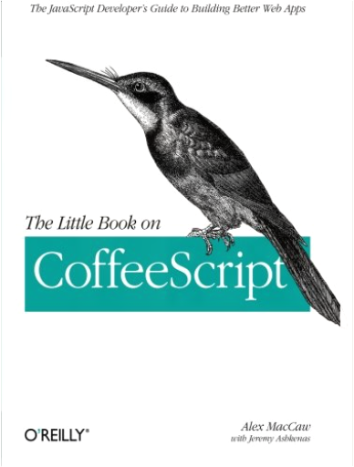
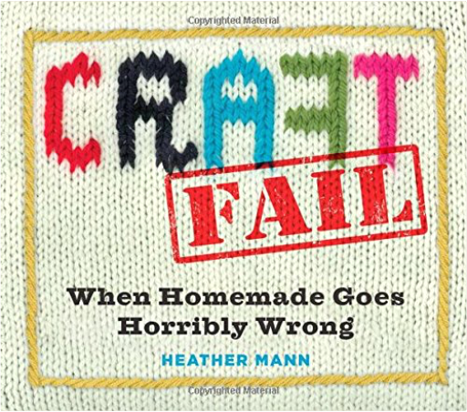
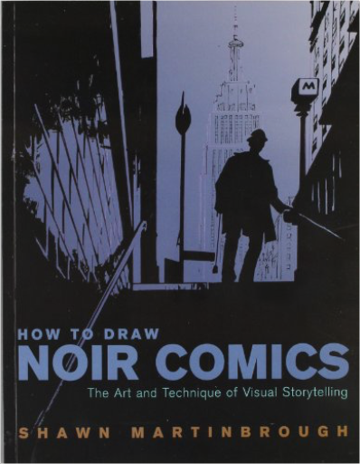
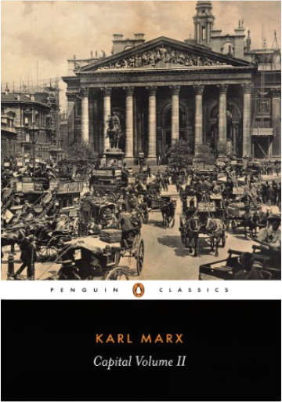

The Little Book on CoffeeScriptAlex MacCaw This concise book shows JavaScript developers how to build superb web applications with CoffeeScript, the remarkable language that’s gaining considerable interest. Through example code, this guide demonstrates how CoffeeScript abstracts JavaScript, providing syntactical sugar and preventing many common errors. You’ll learn CoffeeScript’s syntax and idioms step by step, from basic variables and functions to complex comprehensions and classes.
Written by Alex MacCaw, author of JavaScript Web Applications (O’Reilly), with contributions from CoffeeScript creator Jeremy Ashkenas, this book quickly teaches you best practices for using this language—not just on the client side, but for server-side applications as well. It’s time to take a ride with the little language that could. Discover how CoffeeScript’s syntax differs from JavaScriptLearn about features such as array comprehensions, destructuring assignments, and classesExplore CoffeeScript idioms and compare them to their JavaScript counterpartsCompile CoffeeScript files in static sites with the Cake build systemUse CommonJS modules to structure and deploy CoffeeScript client-side applicationsExamine JavaScript’s bad parts—including features CoffeeScript was able to fix Last One Home: A NovelDebbie Macomber NEW YORK TIMES BESTSELLER • An inspiring standalone novel about the enduring bond between sisters, the power of forgiveness, and a second chance at love.
Growing up, Cassie Carter and her sisters, Karen and Nichole, were incredibly close—until one fateful event drove them apart. After high school, Cassie ran away from home to marry the wrong man, throwing away a college scholarship and breaking her parents’ hearts. To make matters worse, Cassie had always been their father’s favorite—a sentiment that weighed heavily on her sisters and made Cassie’s actions even harder to bear.
Now thirty-one, Cassie is back in Washington, living in Seattle with her daughter and hoping to leave her past behind. After ending a difficult marriage, Cassie is back on her own two feet, the pieces of her life slowly but surely coming together. Despite the strides Cassie’s made, she hasn’t been able to make peace with her sisters. Karen, the oldest, is a busy wife and mother, balancing her career with raising her two children. And Nichole, the youngest, is a stay-at-home mom whose husband indulges her every whim. Then one day, Cassie receives a letter from Karen, offering what Cassie thinks may be a chance to reconcile. And as Cassie opens herself up to new possibilities—making amends with her sisters, finding love once more—she realizes the power of compassion, and the promise of a fresh start.
A wonderful novel of perseverance and trust, and an exciting journey through life’s challenges and joys, Last One Home is Debbie Macomber at the height of her talents.
Praise for Last One Home
“Fans of bestselling author Macomber will not be disappointed by this compelling stand-alone novel.”—Library Journal
“Family, forgiveness and second chances are the themes in Macomber’s latest stand-alone novel. No one writes better women’s contemporary fiction, and Last One Home is another wonderful example. Always inspiring and heartwarming, this is a read you will cherish.”—RT Book Reviews
“Tender, real, and full of hope.”—Heroes and Heartbreakers
“Once again, Ms. Macomber has woven a charming tale dealing with facing life’s hard knocks, begging forgiveness, and gaining self-confidence.”—Reader to Reader
“Macomber never disappoints me. . . . She always manages to leave me with a warming of the soul and fuzzy feelings that stays for days.”—Fresh Fiction
“A very heartwarming novel of healing and reconciliation . . . that touches on life’s more serious moments and will leave readers hoping to revisit these flawed but lovable characters in the future.”—Book Reviews & More by Kathy CraftFail: When Homemade Goes Horribly WrongHeather Mann Poor Bridgit, who overestimated the size of her head―her homemade frilly lace shower cap came straight down to her chin. And who can blame Lindsey for thinking “glitter shoes” sounded like a cool, easy project instead of what it turned out to be: a puddle of sparkling glop. And really, whoever posted that incredible Spaghetti-Stuffed Garlic Bread on Pinterest should be sued. When Mindy pulled hers from the oven, it looked like a “hot mess of intestines streaming out of doughy flesh.” Mmmm, thank you, Pinterest!
Written by Heather Mann, publisher of CraftFail.com, her hilarious blog with millions of page views and hundreds of thousands of followers, CraftFail celebrates the creative process, but from the other side. This is the stuff that gets the “A for Effort” and LOL for outcome. But once the laughter dies down, it also inspires a warm feel-good respect for crafters who aren’t afraid to fail. After all, even if there’s not a mortal alive except Martha who can make a Waxed Heart worthy of hanging in your window to catch the sun, why shouldn’t many try? When it goes wrong, why shouldn’t the rest of us enjoy this Epic Fail? And then look at all the full-color photos that document it.
Home decor fails, fashion fails, holiday fails, food fails, kid crafting fails― as one anonymous crafter said: “It wasn’t supposed to end this way.” Luckily for us, it did. How to Draw Noir Comics: The Art and Technique of Visual StorytellingShawn Martinbrough How to Draw Noir Comics: The Art and Technique of Visual Storytelling is an instructional book based on the cinematic, high contrast noir style of acclaimed comic book and graphic novel illustrator, Shawn Martinbrough.
Martinbrough’s work has been published by DC Comics, Vertigo and Marvel Comics, illustrating stories ranging from Batman to the X-Men. This is his first book, released through Watson-Guptill Publications and The Nielsen Company.
In How to Draw Noir Comics, Martinbrough shows how the expert use of the color black is critical for drawing noir comics. He demonstrates how to set a mood, design characters and locations, stage action and enhance drama, and discusses important topics like page layout, panel design, and cover design.
How to Draw Noir Comics includes The Truce, an original graphic novel written and illustrated by Martinbrough which incorporates the many lessons addressed throughout the book, and has an introduction by critically-acclaimed novelist Greg Rucka, author of the graphic novel Whiteout, currently in production as a major motion picture. Capital - In Manga!Karl Marx As the gap between rich and poor continues to widen, a new generation is reflecting on the insights of Karl Marx. Marx not only stood against the global economic system but he also helped us understand it. He explained how wealth was created on the backs of workers, how "surplus value" is realized and how accumulation is achieved through unpaid labour-time, the intensification of work and the tyranny of credit.
"Capital - In Manga!" is the English translation of the Japanese bestseller. It's a story of a cheese-maker turned capitalist and how greed, exploitation and its social consequences destroys lives and remakes workers into commodities.
It is hoped that this manga may act as a bridge to Marx's original work. Capital : A Critique of Political EconomyKarl Marx The second volume of a political treatise that changed the world
A vital cornerstone to Marx’s overall theory of economics, the second volume of Capital considers in depth the nature of commodity and the market-place bourgeois society. This immensely powerful work argues that prosperity in a capitalist society inevitably holds within itself the seeds of its own destruction.
For more than seventy years, Penguin has been the leading publisher of classic literature in the English-speaking world. With more than 1,700 titles, Penguin Classics represents a global bookshelf of the best works throughout history and across genres and disciplines. Readers trust the series to provide authoritative texts enhanced by introductions and notes by distinguished scholars and contemporary authors, as well as up-to-date translations by award-winning translators. Capital: A Critique of Political Economy, Vol. 3Karl Marx The third volume of a political treatise that changed the world
Unfinished at the time of Marx’s death in 1883 and first published with a preface by Frederick Engels in 1894, the third volume of Capital strives to combine the theories and concepts of the two previous volumes in order to prove conclusively that capitalism is inherently unworkable as a permanent system for society. Here, Marx controversially asserts that—regardless of the efforts of individual capitalists, public authorities or even generous philanthropists—any market economy is inevitably doomed to endure a series of worsening, explosive crises leading finally to complete collapse. But he also offers an inspirational and compelling prediction; that the end of capitalism will culminate in the birth of a far greater form of society.
For more than seventy years, Penguin has been the leading publisher of classic literature in the English-speaking world. With more than 1,700 titles, Penguin Classics represents a global bookshelf of the best works throughout history and across genres and disciplines. Readers trust the series to provide authoritative texts enhanced by introductions and notes by distinguished scholars and contemporary authors, as well as up-to-date translations by award-winning translators. Capital: Volume 1: A Critique of Political EconomyKarl Marx The first volume of a political treatise that changed the world
One of the most notorious works of modern times, as well as one of the most influential, Capital is an incisive critique of private property and the social relations it generates. Living in exile in England, where this work was largely written, Marx drew on a wide-ranging knowledge of its society to support his analysis and create fresh insights. Arguing that capitalism would cause an ever-increasing division in wealth and welfare, he predicted its abolition and replacement by a system with common ownership of the means of production. Capital rapidly acquired readership among the leaders of social democratic parties, particularly in Russia in Germany, and ultimately throughout the world, to become a work described by Marx friend and collaborator Friedrich Engels as “the Bible of the working class.”
For more than seventy years, Penguin has been the leading publisher of classic literature in the English-speaking world. With more than 1,700 titles, Penguin Classics represents a global bookshelf of the best works throughout history and across genres and disciplines. Readers trust the series to provide authoritative texts enhanced by introductions and notes by distinguished scholars and contemporary authors, as well as up-to-date translations by award-winning translators. The Communist Manifesto (Illustrated) - Chapter One: Historical MaterialismKarl Marx, Friedrich Engels, George S Rigakos "A spectre is haunting Europe - the spectre of communism. All the powers of old Europe have entered into a holy alliance to exorcise this spectre: Pope and Tsar, Metternich and Guizot, French Radicals and German police-spies..." A spectre toils silently in sun-baked fields. It shuffles through dusty village squares. It slaves amidst the grime and drudgery of factory floors. It picks through the garbage of shanty-town alleys. It floats over office-tower cubicles row upon row. Wherever capitalism has had its parade our spectre follows quietly. It settles amongst the alienated, the impoverished, the exploited. It bears witness to millions of silent screams. More and more, we glimpse that ghost. But why a graphic edition? Put simply, in order to reanimate the text. To make it available to a new audience. To help us better understand our innate yearning for the promise of a better tomorrow and to re-acquaint us with a political pamphlet that forged the ideological foundations for one of the most idealistic yet repressive eras of human history. The Communist Manifesto (Illustrated) - Chapter Three: The ProletariatKarl Marx, George S Rigakos "OWING TO THE EXTENSIVE USE OF MACHINERY, AND TO THE DIVISION OF LABOUR, THE WORK OF THE PROLETARIANS HAS LOST ALL INDIVIDUAL CHARACTER, AND, CONSEQUENTLY, ALL CHARM FOR THE WORKMAN. HE BECOMES AN APPENDAGE OF THE MACHINE, AND IT IS ONLY THE MOST SIMPLE, MOST MONOTONOUS, AND MOST EASILY ACQUIRED KNACK, THAT IS REQUIRED OF HIM.
AS THE REPULSIVENESS OF THE WORK INCREASES, THE WAGE DECREASES. NAY MORE, IN PROPORTION AS THE USE OF MACHINERY AND DIVISION OF LABOUR INCREASES, IN THE SAME PROPORTION THE BURDEN OF TOIL ALSO INCREASES..." The Communist Manifesto (Illustrated) - Chapter Two: The BourgeoisieKarl Marx, Friedrich Engels, George S Rigakos "The bourgeoisie, by the rapid improvement of all instruments of production, by the immensely facilitated means of communication, draws all, even the most barbarian, nations into civilisation... It compels all nations, on pain of extinction, to adopt the bourgeois mode of production; it compels them to introduce what it calls civilisation into their midst, i.e., to become bourgeois themselves. In one word, it creates a world after its own image." |

 Made with Delicious Library
Made with Delicious Library